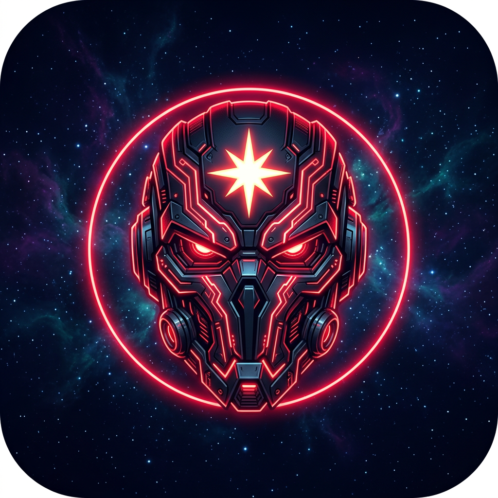

منصّة دعوية مستقلة تُنتج مقاطع قصيرة أصلية: تلاوات قرآنية موثّقة، أحاديث، أذكار، أدعية، قصص ومعلومات — بجودة سينمائية وبلا موسيقى.
تطبيق النشر الرسمي للمنصّة: يتيح لصاحب الحساب ربط حسابه في تيك توك ونشر مقاطعه الأصلية التي ينتجها بنفسه مباشرة إلى حسابه، بضغطة واحدة، مع عرض اسمه وصورة ملفه داخل لوحة التحكم.
المحتوى المرفوع ملك لصانعه ولا يُنشر إلا على حساب المستخدم المصرَّح نفسه.
© 2026 XDAW NOVA